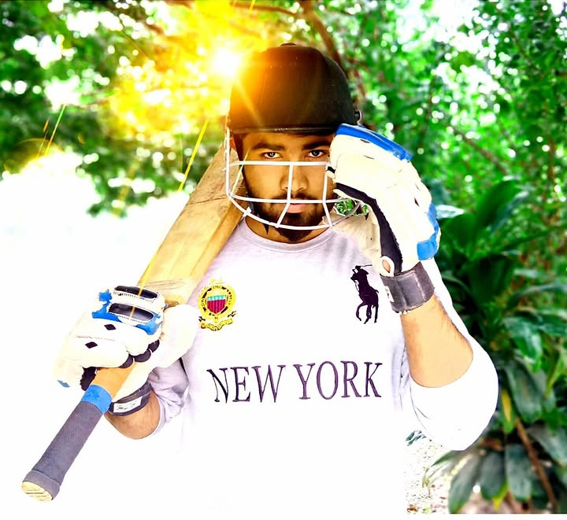
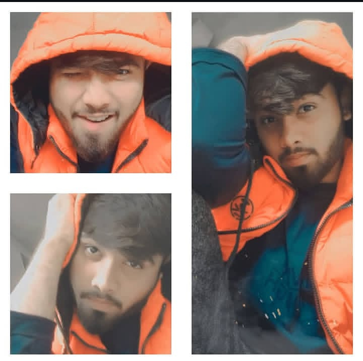
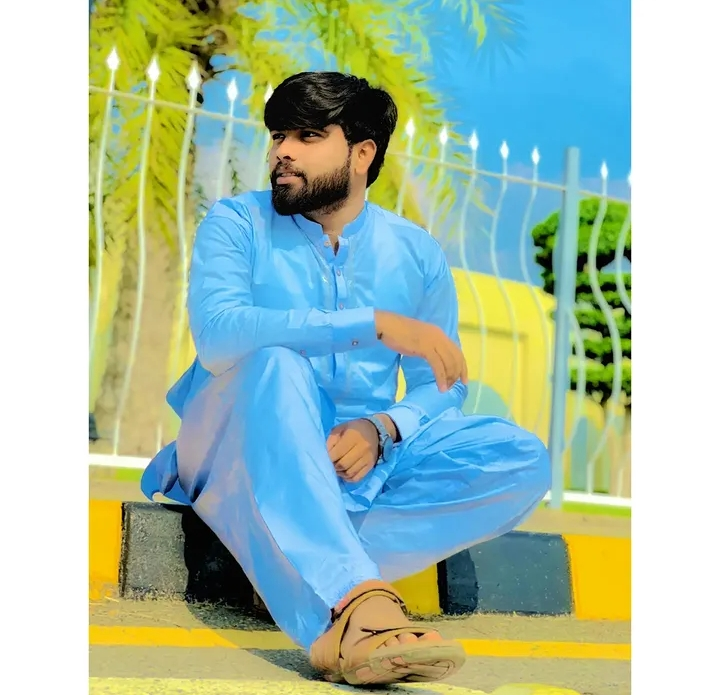
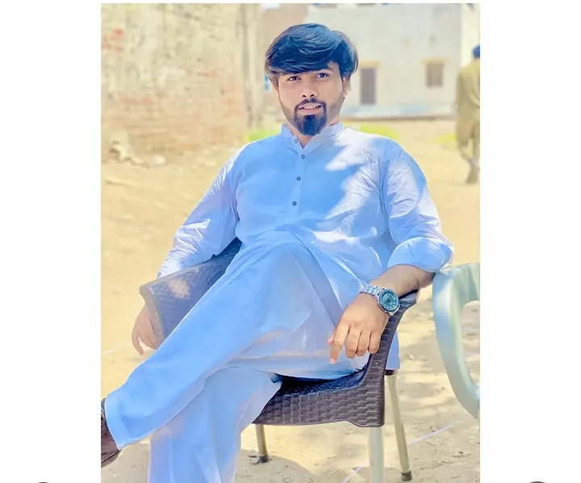
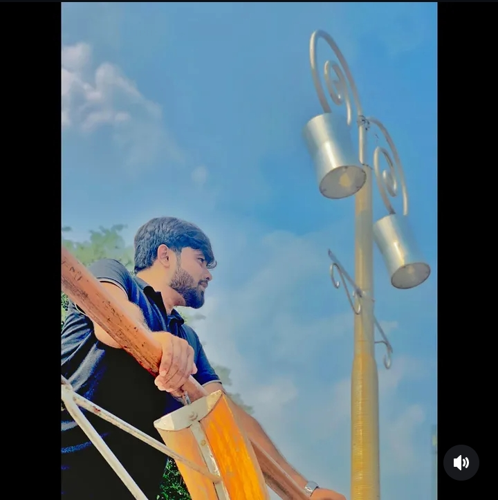

Something made just for you from your's irritating sairu
A little surprise has been waiting for you.
Some moments deserve more than a simple congratulations. This one is for your hard work, your journey while lefting yours dream back , and the new beginning ahead I want you to know that you are appreciated more than you may ever realize. I appreciate your presence, your words, your care, your little efforts, and all those moments when you make me smile without even trying. You have become someone whose happiness matters deeply to me, someone I want to see succeed, grow, and achieve every beautiful dream as m that life has to offer. Whenever life feels difficult, I hope you remember how special you are and how much goodness you deserve.
Ready to see what's waiting for you?
Your moment is here
Congratulations,
NoUmAn Ghouri.
You did it! After all the effort, waiting, and challenges along the way, a new door has opened.
This is your moment to step forward with confidence and give yourself a chance to shine.I cannot promise that every day will be perfect, because life has its own challenges and unexpected turns. But I can promise to value the beautiful moments we share, to communicate honestly, to respect your feelings, and to appreciate the little things that make our bond meaningful. I want us to keep learning about each other, understanding each other better, laughing over silly things, sharing our dreams, and creating memories that bring smiles to our faces even years later..
Here's to your new dispatch job with USA and all the possibilities this beginning can bring.
A few things worth celebrating
Why you deserve this opportunity.
Tap each card to discover its messageWriting 💗 Mera shahzada NoUmAn 🫶🏻 Mera kojhaaaa 🫂 NoUmAn, ❤️✨ Do you know why you deserve all of this? Because you are someone whose happiness genuinely matters to me. You deserve to feel special, appreciated, valued, and loved—not just on one particular day, but in the smallest moments of your life, too. You deserve beautiful surprises, genuine smiles, heartfelt words, and reminders that someone out there thinks you are precious beyond what words can explain. And today, I wanted to create something just for you, something that could make you smile and remind you how important you are to me. 🥹💖 You deserve this because of the happiness you bring into my life without even trying. Sometimes, a simple conversation with you can make an ordinary day feel extraordinary. Sometimes, just thinking about you brings a smile to my face that I cannot explain. You have become a beautiful part of my thoughts, my memories, and the little moments that make life feel warmer. Maybe I do not always express everything perfectly, and maybe there are feelings that words can never fully describe, but please believe me when I say that you mean so much to me. ❤️🫂 You deserve this because you are more than just a name, more than just a person I talk to, and more than just a passing moment in my life. You are someone I genuinely care about, someone whose dreams I want to see come true, whose smile I want to see more often, and whose heart I hope life treats with kindness. I want you to achieve everything you work for, to believe in yourself even when things become difficult, and to remember that you are capable of so many wonderful things. I hope you never forget your worth or stop believing in the beautiful future waiting for you. 🌍💫 And honestly, this little surprise is only a tiny reflection of what I wish I could express to you. I wish I could collect every beautiful word in the world and arrange them into a message that would make you understand how special you are to me. I wish I could put every smile you have brought to my face into a little box and give it to you as a reminder of the happiness you have shared with me. Since I cannot do that, I made this instead—a small corner of the internet filled with my thoughts, my affection, and a little piece of my heart. Every word here is meant to remind you that you are appreciated in ways you may not always notice. 💌🥹 You deserve love that feels peaceful, care that feels genuine, respect that never makes you question your worth, and happiness that does not disappear when life gets complicated. You deserve people who listen to you, celebrate your achievements, support your dreams, and remind you of your strength when you forget it yourself. You deserve to feel safe being who you are, to laugh without holding back, and to dream without being afraid of how big those dreams might be. And if this little surprise can bring even one extra smile to your face today, then creating it has been worth every second. 🫶🏻🌷 NoUmAn, I did not make this because I needed a special occasion or an excuse to express my feelings. I made it because sometimes a person deserves to be reminded of how much they matter, and you are that person for me. I wanted you to open this website and feel a little warmth in your heart. I wanted you to read these words and smile, perhaps shake your head at how emotional I can be, and realize that someone took the time to make something with you in mind. Every little detail is my way of saying, “You matter to me, and I wanted you to know it.” ❤️🥺 So, my NoUmAn, if you ever wonder why I made this for you, the answer is simple: because you deserve to feel special, because your happiness matters, because you have a beautiful place in my heart, and because some people are worth celebrating for no reason other than being themselves. You do not have to be perfect to deserve affection. You do not have to achieve something extraordinary to deserve appreciation. You deserve kindness simply because you are human, and you deserve this little reminder because you are someone I care about deeply. Keep smiling, keep dreaming, keep becoming the person you want to be, and never underestimate the happiness your presence can bring into someone's life. I hope this surprise becomes one of those little memories that makes you smile whenever you remember it. And if these words manage to make your heart feel even a little lighter and happier, then my purpose is fulfilled. You are special, you are appreciated, and you deserve so many beautiful things in this world. With all my love, my sweetest NoUmAn. You deserve this surprise, these words, every little smile they bring, and so much more than I could ever fit into one paragraph. Forever your Mithu. ❤️🧸💋💗
The journey behind the news
Your hard work deserves its moment.
I know this journey hasn't always been easy. You've struggled along the way, and that's exactly why this new beginning mattersWriting 📰❤️ The Journey Behind the News — A Little Story About Us 💌 My dearest NoUmAn, 🥹❤️ Behind every beautiful story, there is a beginning that nobody sees, a feeling that words cannot fully explain, and little moments that slowly become unforgettable memories. And behind this little surprise waiting for you, there is a heart full of affection, countless thoughts about you, and a simple wish to make you smile. You might be wondering why I created this website, why I put these words together, and why I wanted you to discover each page one by one. The truth is, my love, this is more than a website. It is a little collection of feelings that I sometimes find difficult to express when we talk. Every page carries a thought, every message holds a little meaning, and every word is my way of telling you something that my heart has wanted you to know. 🫶🏻💗 The journey behind this surprise began with one simple thought: What if I could create something that would make NoUmAn feel genuinely special? Something different from an ordinary message, something he could open whenever he wanted and read with a smile. I wanted to give you a little experience filled with warmth, affection, beautiful words, and reminders of how much you matter to me. I imagined you moving from one page to another, discovering each message, smiling at some lines, feeling emotional at others, and perhaps wondering how much thought your Mithu had put into all of this. Just imagining that smile made the whole idea feel worthwhile. 🥹🎀 Behind these pages are feelings that cannot always be measured by the number of messages we exchange or the time we spend talking. Sometimes, affection lives in the smallest things: remembering a detail, wishing someone a peaceful day, hoping they achieve their dreams, or wanting to make them smile after a tiring day. Sometimes, the most meaningful things are not grand promises but little efforts made with a sincere heart. That is what I wanted this surprise to represent—not perfection, not a fairytale without difficulties, but genuine care, thoughtful effort, and the happiness of making someone feel appreciated. ❤️🧸 And perhaps the most beautiful part of this journey is that the story does not end when you reach the final page. This website is only a little moment in a much bigger story that life is still writing. There are conversations we have yet to share, memories we have yet to create, dreams we have yet to discover, and countless ordinary days that might one day become extraordinary simply because they were meaningful to us. I hope the future brings you happiness, confidence, success, and peace, and I hope every chapter you write teaches you something beautiful about yourself and the world around you. If our journeys continue side by side, I hope we fill our chapters with honesty, loyalty, laughter, patience, and a love that respects and encourages us both. 🌷💞 NoUmAn, this is the little story behind the news: a girl wanted to do something special for someone who holds a precious place in her heart, so she turned her feelings into a website, her thoughts into paragraphs, and her affection into a surprise waiting to be discovered. Maybe the words are not enough to explain everything, but they carry a sincere message: you are appreciated, your happiness matters, and the effort behind this little creation comes from a genuine wish to make you feel loved. Every click is another little page, every page is another thought, and the whole journey is a reminder that sometimes the simplest idea can carry the warmest feelings. 💌🥹 So, my sweetest NoUmAn, now you know the story behind the surprise. The real news is not just that I made a website for you; it is that I wanted to create a little memory you could revisit and smile at. And if, someday, you look back at this moment, I hope you remember the happiness, the thought, and the affection behind it. This is our little story within a much bigger journey, and its next chapters are still waiting to be written. With all my love, from your Mithu, who wanted to make this moment a little more beautiful for you. ❤️📖🫶🏻💋💗
You kept moving forward
Even when things took time, you continued towards the opportunity you wanted.
Now you get to begin again
This job is a chance to learn, build confidence, and discover what you can achieve.
Take it one day at a time
You don't need to know everything on day one. Keep showing up, asking questions, and growing.
The difficult days are part of your story, but they don't get to write the whole ending.
The little things that matter
It's not only what you do. It's who you are.
Beyond your job title are the qualities that make you special.
Your love
Writing ❤️🥹 Your Love for Me, My NoUmAn 💗🧸❤️ Sometimes I wonder what it truly feels like to be loved by you—not just through sweet words or beautiful promises, but through the little things you do, the way you care, the way you remember me, and the way you make me feel that I have a special place in your heart. I want to understand your love in all its little details: the thoughts you never say aloud, the feelings you sometimes struggle to explain, and the moments when you miss me but don't know how to express it. I want to know the real you, beyond the smiles, beyond the conversations, and beyond the words we exchange every day. 🥹💞 NoUmAn, I don't expect you to be a perfect person or to express your feelings perfectly all the time. I know that everyone has their own way of showing affection. Sometimes love is spoken through words, sometimes it is shown through thoughtful actions, and sometimes it is simply the comfort of knowing that someone genuinely cares. What matters to me is that the love between us feels sincere, respectful, and real. I want to feel appreciated without having to ask for it every time, understood even when my words are imperfect, and valued not only on beautiful days but also when life becomes difficult. ❤️🫂 I want your love to be a place where my heart can find peace, where honesty feels natural, where loyalty is shown through actions, and where neither of us has to pretend to be someone else to feel worthy. I want us to talk about our feelings openly, laugh over the smallest things, support each other's dreams, and learn how to understand one another better with every passing day. I want the kind of connection where a simple message can brighten an ordinary afternoon, a thoughtful question can make a difficult day easier, and a genuine apology can help us grow beyond a misunderstanding. 🌷✨ My love, sometimes the smallest gestures mean more than the grandest declarations. Remembering something I told you, asking how my day went, noticing when something is bothering me, or making a little effort to stay connected can mean so much. I don't need every moment to be extraordinary; I want the ordinary moments to feel meaningful because we treat each other with care. I hope we never become so comfortable with one another that we stop appreciating the little things that brought happiness into our lives in the first place. 💌🥺 And NoUmAn, I want you to know that I want to give you that same kind of love, too. I want to listen when you need someone to hear you, encourage you when your confidence feels low, celebrate your achievements, and remind you of your strengths when you forget them. I want to respect your individuality, your dreams, your responsibilities, and the person you are becoming. I want our bond to be something we both contribute to—a connection built on mutual effort, trust, patience, affection, and the freedom to grow without losing ourselves. 🫶🏻❤️ Sometimes, I may become emotional because you matter to me more than I can easily explain. Sometimes, I may wish for extra reassurance, a little more affection, or a reminder that the feelings we share are genuine. Those wishes come from wanting to feel close and understood, not from expecting perfection. I hope we can always tell each other what is in our hearts with kindness, without fear of judgment, and without making one another feel that our feelings are a burden. I want us to learn each other's hearts patiently, because meaningful love is not about automatically knowing everything; it is about being willing to understand. 🥹💗 So, my sweetest NoUmAn, when I say “your love for me,” I am not asking for a thousand promises or words that sound beautiful only in the moment. I am hoping for a love that I can recognize in your honesty, your loyalty, your kindness, and your consistent effort. A love that gives us both reasons to smile, helps us become better people, and makes room for both affection and respect. I want us to choose this bond freely, care for it sincerely, and appreciate the happiness we bring into each other's lives. And if you ever wonder what my heart wishes for from your love, remember this, my NoUmAn: I want to feel loved, respected, remembered, understood, and chosen with sincerity—not just today, but through the ordinary days that make up a lifetime. I don't need a perfect love story; I want a genuine one, written with two honest hearts, mutual loyalty, countless little efforts, and a tenderness that never forgets how precious the other person is. With all my love, your Mithu. ❤️🧸💋💗 Make this message shorter and more heartfelt Add specific memories between me and NoUmAn Make the tone more romantic and passionateThe love you show me has a special place in my heart. It's one of the things I value most.
Your loyalty
Writing ❤️🔐 Your Loyalty & Secrets With Me 🫶🏻 My dearest NoUmAn, my heart wishes for your honest loyalty, a love without hidden intentions, and a bond where we can share our secrets without fear. I want us to protect each other's trust, keep our private conversations safe, and always choose honesty over lies. You don't have to be perfect, my love; just be genuine with me. Let your loyalty show through your actions, and let our secrets remain safe in the trust we build together. All I want is your honest heart, your faithful love, and a bond only we truly understandBeing able to count on someone matters. Your loyalty is something I genuinely appreciate.
The way you make time
Writing 🥹❤️ The Way You Make Time for Me, My NoUmAn 🫶🏻💌 My dearest NoUmAn, ❤️🧸 Do you know what makes me feel truly special? It is not expensive gifts, grand surprises, or beautiful promises. It is your time. The way you make a little space for me in your busy day, the way you reply even when you have other things to do, the way you ask about my day, and the way a few moments with you can turn my whole mood around. You may think these things are small, but to my heart, they mean more than you could ever imagine. 🥹💗 My love, I know you have your own responsibilities, dreams, worries, and a life that does not stop for anyone. I never expect you to leave everything behind just to talk to me, and I don't need you to be available every second. I simply want to feel that, somewhere in your busy world, there is a little corner reserved for me—a place where I am remembered, where my messages matter, and where spending a little time together feels like something you genuinely want, not something you are forced to do. ❤️🩹🫂 Sometimes, even a short conversation with you is enough to make me smile for hours. A simple message asking, “How are you, Mithu?” can mean so much when my day has been difficult. A few minutes of your attention can make me feel closer to you, even when we are physically apart. And when you remember something I told you, notice a change in my mood, or make an effort to talk to me despite having a busy day, my heart quietly treasures those moments. It reminds me that love does not always need grand expressions; sometimes, it is found in the smallest efforts made with a sincere heart. 🥺💞 NoUmAn, I want you to understand that when I wish to spend time with you, it is not because I want to control your day or take away your freedom. It is because talking to you has become something I genuinely look forward to. There are moments when I have so much to tell you, little things that happened during my day, silly thoughts that made me laugh, and feelings that I cannot explain to anyone else in quite the same way. Sometimes, I don't even need a special topic. I just want to talk to you, hear how you are doing, laugh with you over something meaningless, and feel that we are still connected despite everything happening around us. ❤️🧸 And honestly, my love, one of the most emotional feelings is waiting for a moment with someone who means so much to you. Not because you want every minute of their attention, but because even a little time together feels precious. Sometimes I may miss you more than I can express. Sometimes I may look forward to your message, hoping we will get a chance to talk, share our thoughts, or simply ask each other how the day went. I may not always tell you how much those little moments mean to me, but I remember them. I treasure the conversations that make me smile after they end, the words that comfort me, and the moments when I feel that we are both making an effort to stay close. 🥹❤️🩹 I don't want you to feel guilty whenever life gets busy, NoUmAn. I want you to pursue your dreams, work towards your goals, spend time with your family, and take care of yourself. I want to be someone who encourages you, not someone who makes your life feel heavier. But I also hope that, amid all your responsibilities, we continue to make time for each other in ways that feel natural and meaningful. Even a little reassurance, an honest explanation when you are busy, or a simple message saying that you will talk to me later can mean so much. It is not about counting minutes; it is about feeling considered. 💌🌷 My sweetest NoUmAn, I hope you understand that time is one of the most beautiful gifts a person can give, because once a moment has passed, we can never get that exact moment back. When you willingly share your time with me, you give me something that cannot be replaced by material things. You give me memories, laughter, comfort, and little pieces of your day that become part of my happiness. I don't need every conversation to be long, and I don't need every day to be perfect. I simply want us to keep showing each other that this connection matters through genuine, mutual effort. One day, when we look back on our memories, I hope we remember not only the big moments but also the ordinary ones: the random conversations, the late replies followed by thoughtful explanations, the unexpected calls, the laughter over silly things, and the simple “Have you eaten?” or “How was your day?” messages. Those little moments may seem ordinary while they are happening, but sometimes they become the memories we cherish most. I hope we keep creating moments that make us smile long after the conversation has ended. ❤️✨ So, my NoUmAn, if you ever wonder what I want from you, remember this: I don't want all your time; I want time that you give me willingly, attention that comes from your heart, and effort that reminds me I matter to you. I want to be someone you make room for, just as I want to make room for you in my life. Because for me, the sweetest kind of love is not measured by how many hours we spend talking, but by the care, sincerity, and happiness we bring into the moments we share. Even a few minutes with a genuine heart can mean more than a thousand empty promises. And whenever you choose to spend a little part of your day with me, please know that your Mithu treasures it more than words can ever explain. Forever with love, your Mithu. ❤️🫶🏻🧸💋💗You make an effort to be there for me. Even the small gestures can mean so much.
From struggling to stepping forward.
You've struggled a lot, and now it's your time to get in there and make the most of it.
This is the part of the story where you take what you've learned, walk into a new opportunity, and give yourself permission to grow.
Every journey has its own timing. You don't have to compare yours with anybody else's. Keep your focus on the next step, celebrate the small wins, and remember how much effort it took to get here.
I hope one day you look back at this beginning and smile at how much has changed.
Something I want you to know
I'm proud of you for more than this job and alot of alhumdulilah to have you on my side.
Your success matters to me because bossy man you matter to me.
I'm proud of the progress you're making and happy to see another opportunity opening up for you. I appreciate your love, your loyalty, and the way you make an effort to be there for me.
I want you to have things you're excited about, goals worth chasing, and a life that gives you reasons to feel proud of yourself, too.
I'll be cheering you on as you find your feet, learn the work, and make this new chapter your own.
A wish for your new beginning
May this chapter bring good things your way.you get what u want and make ammi baba happiest being your's parents.i will Always love you for what you are.i really don't know if i either comfort you as much you needed r not but i swear i tried this every single moment,i force you to talk to me just to get my own comfort without knowing your's easiness im so sorry for being irritating when u all need is peace ,for now i wish i become your's forever we live togather with ours children while giggling with life
Confidence
May you trust yourself more with every new thing you learn.May yours confident personality leads you to the stage of an ideal man with success.
Growth
May this job open doors to new skills, opportunities, and achievements.May this door step into my House and we become spouse soon with the help of almight allah and happiness of our parents
Peace and happiness
May your hard work bring you stability, satisfaction, and more reasons to smile.The comfort you are following met you at every door you step in .ameen
You don't have to be perfect. Just be willing to be mine , keep your values close,and be childish for me , and take the next step with courage and hope to be mine surtajj in sha Allah, your's sairuuuuuuu's little innocent wish
Little moments, lasting memories
Five pictures, one special person.
Replace these five image files with your favourite photos. Keep their filenames the same.





Here's to the memories you've already made and the ones still ahead.
Here's to what comes next
You've got this, NoUmAn.
Congratulations on building your's own corner. I know you've struggled to reach this point, and I hope you take a moment to appreciate how far you've come.
Walk into this new chapter with an hope, work hard, and give yourself time to settle in. Every day is another chance to get better and closer to me mithyyyyyy.
I'm proud of you, I believe in your ability to keep moving forward, and I truly wish you success and happiness in everything ahead.
This is your time. Make the most of it.
With love, pride, and the warmest wishes ♡